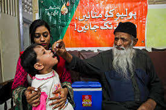

Abdul Sattar Edhi was a Pakistani philanthropist known for his charitable work and humanitarian efforts. He dedicated his life to helping the poor, sick, and needy, making a significant impact on countless lives.
Admirable Qualities
- Compassion: Edhi dedicated his life to helping the poor and needy.
- Humanitarianism: Founded the Edhi Foundation, which provides emergency assistance, medical aid, and education.
- Simplicity: Lived a very simple life despite his achievements.
- Resilience: Overcame many challenges to build the largest volunteer ambulance network in the world.
- Humility: Known for his humble nature and dedication to service without seeking personal gain.
- Integrity: Maintained honesty and integrity in all his work, earning the trust of millions.
- Dedication: Worked tirelessly, often for 18-20 hours a day, to serve those in need.
- Inclusivity: Helped people of all backgrounds, regardless of race, religion, or nationality.
- Visionary Leadership: Created a comprehensive network of services, including orphanages, clinics, women's shelters, and rehabilitation centers.
- Selflessness: Used his own resources and lived a modest life to ensure maximum support for his charitable activities.
- Empathy: Had an extraordinary ability to empathize with the suffering of others, which drove his humanitarian efforts.
- Courage: Fearlessly tackled difficult and dangerous situations to provide aid and relief.
- Innovation: Pioneered innovative solutions in emergency response and social welfare.
- Mentorship: Inspired and mentored countless volunteers to join his cause and continue his legacy.
- Global Impact: Received international recognition for his humanitarian work, influencing aid practices worldwide.
Images
